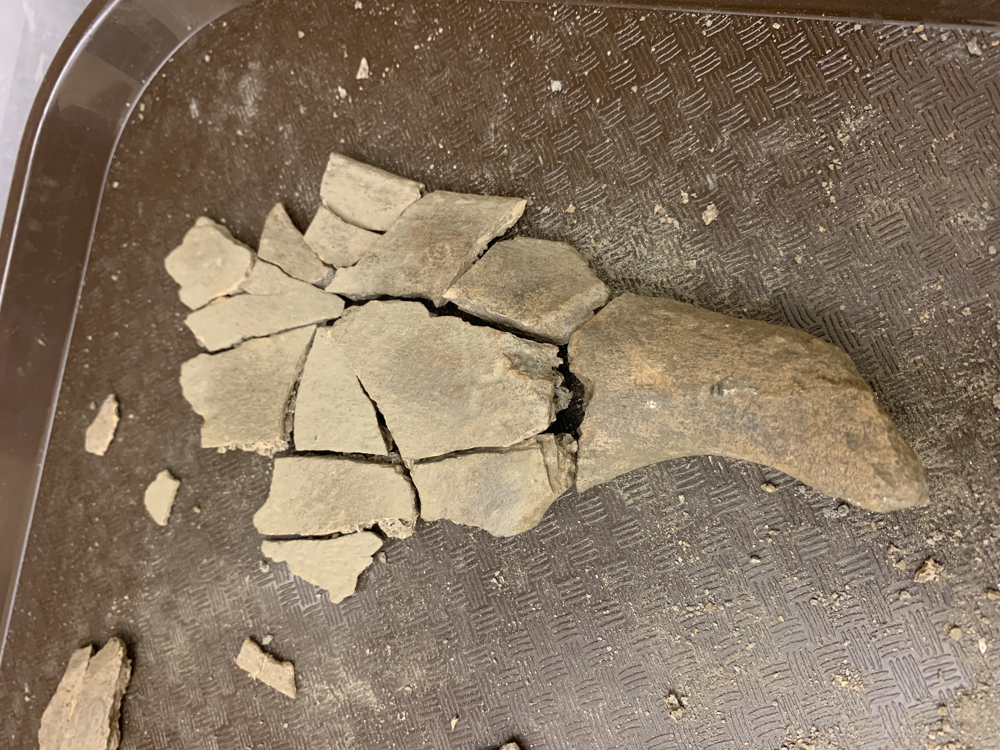

What Was Found?
Some of the artifacts include a number of porcelain sherds, clay smoking pipes, different colored glassware,
and
various faunal remains.
A photo of a piece of porcelain that has a maker's mark. Historically, ceramics have a maker's mark that
leads to
a company or person who created the piece and tends to be a great source for dating.
A photo of glass with lead covering. In colonial times, some glassware was wrapped in lead or tin and was
eventually changed due to people
understanding their toxic traits.
A photo of a clay smoking pipe stem dated from 1725-1780. By measuring the diameter of the opening of the
pipe stem, one can accurately date
the artifact due to the styles being changed very few decades.

A photo of faunal remains, pieced back together. Based on what faunal remains are found, archaeologists can
interpret what diets individuals had
in specific regions and time periods.